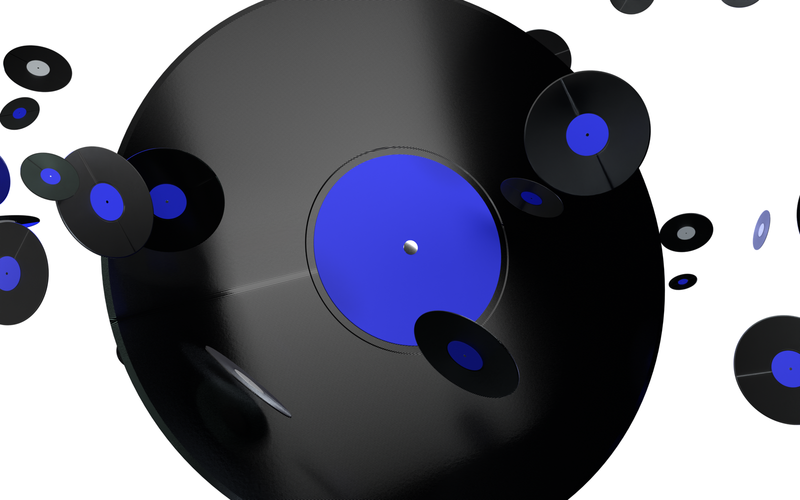
ЦИФРОВОЙ ЛОНГРИД
2026
SPOTIFY
WRAPPED
Как музыка превращается
в историю года
365 дней · 1 284 трека · 47 382 минуты —
пока это просто данные.
ЛИСТАЙ ↓
За год мы слушаем сотни песен: на прогулке, в дороге, дома или на учёбе. Обычно мы не замечаем, как из этих прослушиваний складывается наш музыкальный год. В декабре Spotify собирает их в одну персональную историю — Wrapped.
01
Вступление / 365 дней
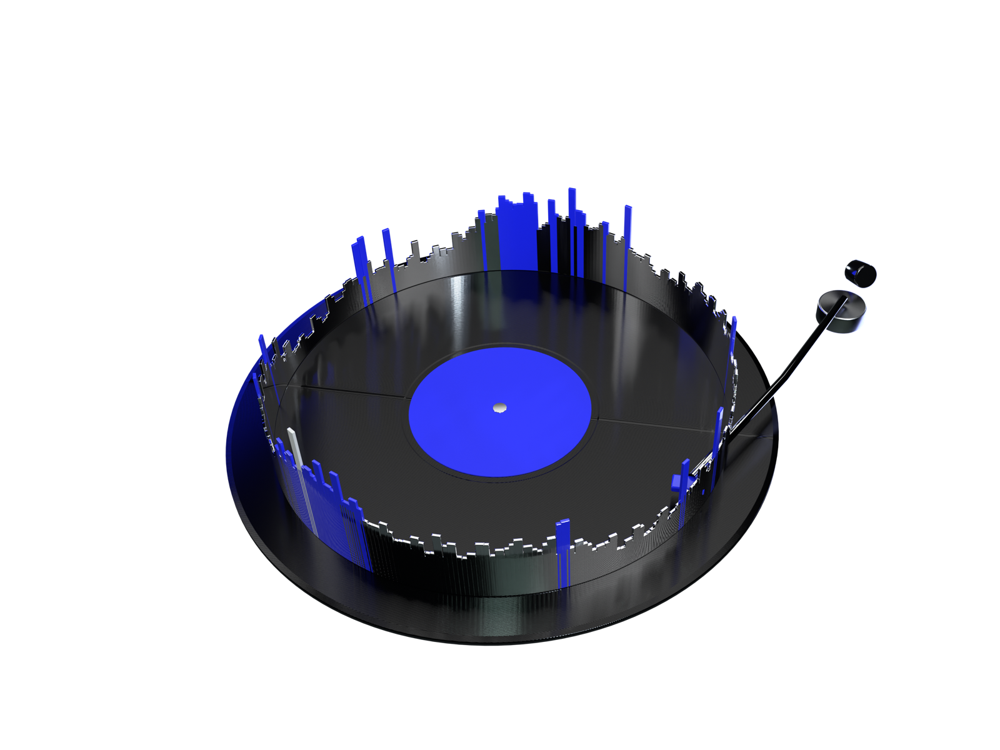
365
дней
День 001
День 365
Пик года
1 января
31 декабря
350 минут
Твой год по дням
130
30.12
365/365
минут в среднем в день
пик года — 350 минут
дней с музыкой
Пластинка года: 365 столбиков — 365 дней, высота — минуты музыки за день. Ниже тот же год, развёрнутый в линию; светлая линия — среднее за неделю.
02
История формата
Как всёначиналось?
В 2015 году Spotify впервые показал пользователям персональные итоги прослушиваний. Уже в 2016 появился Spotify Wrapped. Постепенно обычная статистика превратилась в яркую интерактивную историю и ежегодное событие, которого пользователи ждут каждый декабрь.
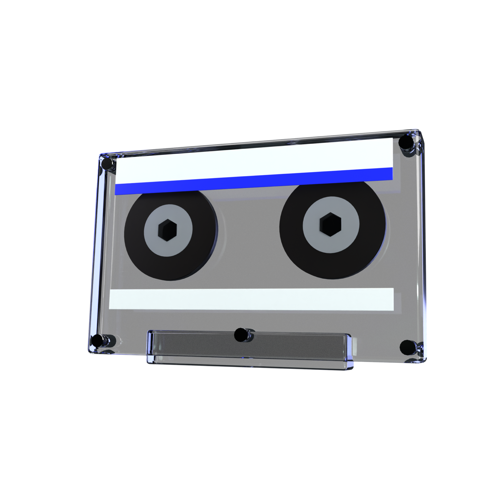
2015
2015 первые итоги
Кассета: первые персональные итоги — пока просто статистика.
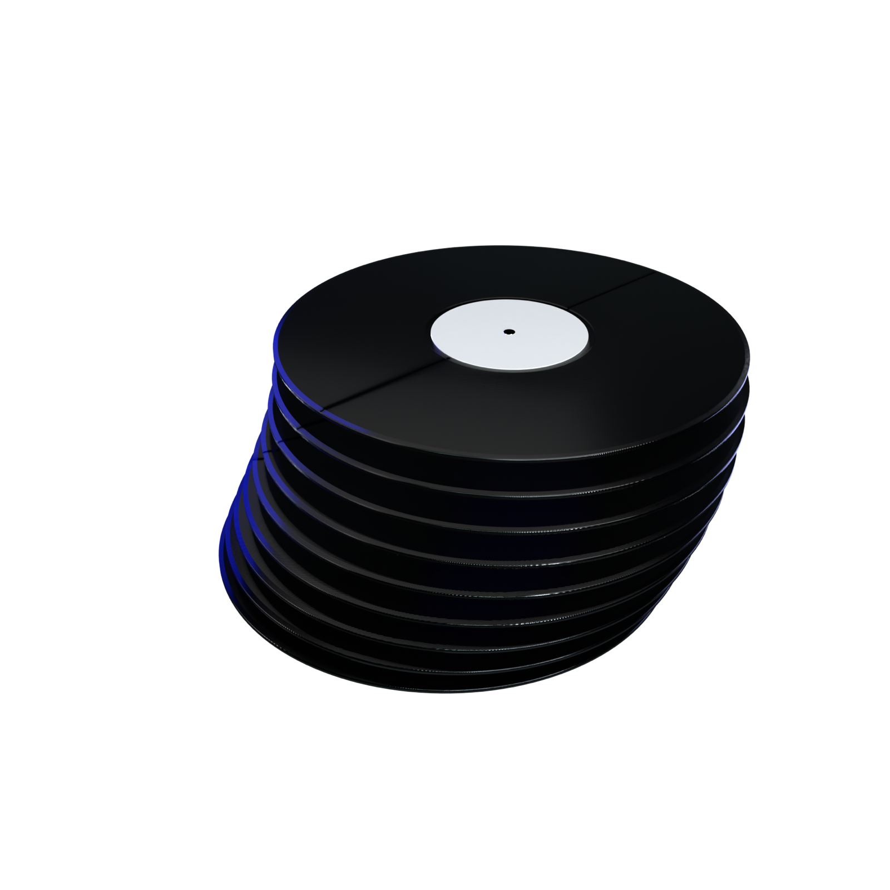
2016
2016 Spotify Wrapped
Стопка пластинок: итоги получают свой формат.
сегодня
→ сегодня ежегодное событие
Наушники: ежегодное событие эпохи стриминга.
03
Сборка данных
Каксобираетсятвой Wrapped?
В течение года Spotify анализирует твою историю прослушиваний: любимые треки, исполнителей, жанры и количество минут с музыкой. Затем эти данные объединяются в персональный итог. Поэтому каждый Wrapped получается своим и отражает музыкальные привычки конкретного пользователя.
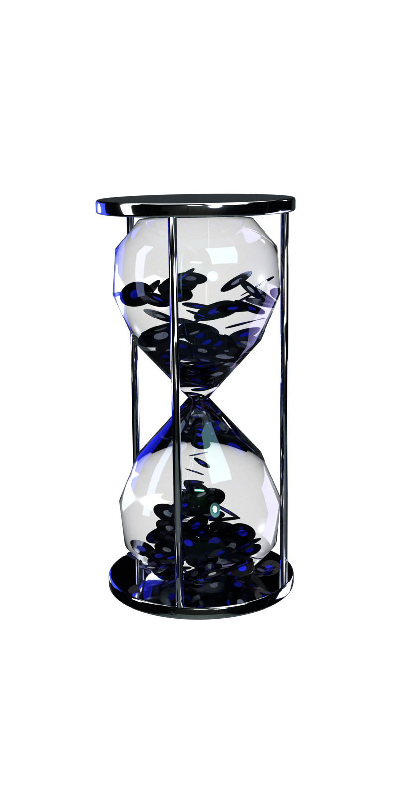
Минуты с музыкой
47 382
Я
Ф
М
А
М
И
И
А
С
О
Н
Д
Минуты сыплются, как песок: в часах вместо песчинок — пластинки. Декабрь — самый плотный месяц.
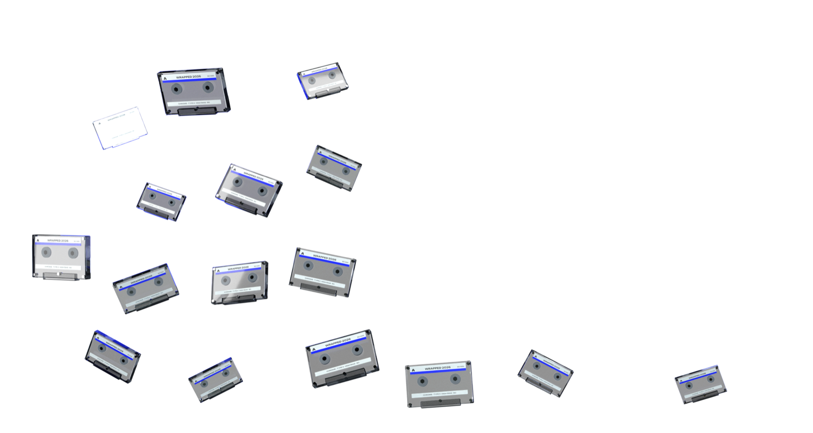
Треки
1 284
Висхолдинг — Три дня дождя
01
214×
How to Save a Life — The Fray
02
188×
моменты — zhanulka, Какая Разница
03
151×
Copines — Aya Nakamura
04
129×
Человечки — STERVELL, VSEMOJNO
05
117×
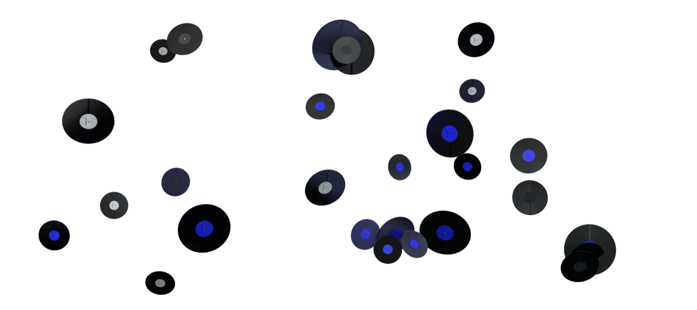
Исполнители
347
Три дня дождя
12%
The Fray
8%
zhanulka
5%
Aya Nakamura
3.5%
31%
62 ч
время с топ-5
Три дня дождя
STERVELL
2.5%
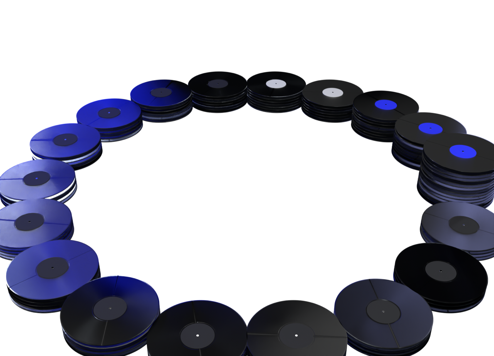
Жанры
86
инди 18%
электроника 14%
хип-хоп 11%
поп 9%
пост-панк 6%
джаз 4%
ещё 80 жанров 38%
04
Визуальный язык
Чтопревращаетцифрыв историю?
Сами по себе минуты, проценты и списки артистов выглядят как обычная статистика. Wrapped превращает их в яркие карточки с крупной типографикой, графикой, цветом и движением. Благодаря дизайну цифры становятся частью визуальной истории.
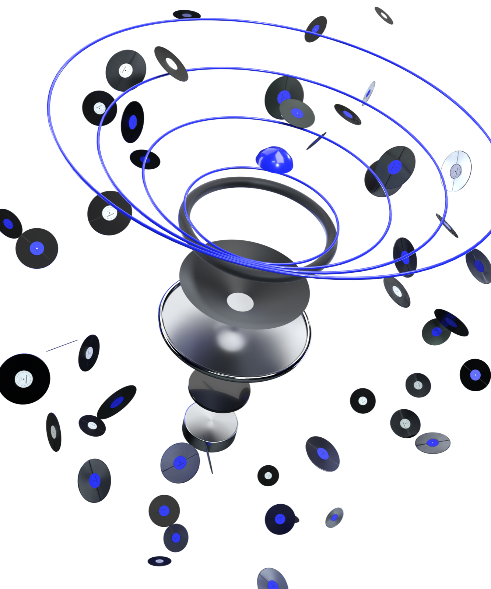
ДО: СТАТИСТИКА
ПОСЛЕ: ИСТОРИЯ
47 382
минуты музыки
ТОП-1%
«Висхолдинг» звучал у тебя 214 раз
минут .......... 47382
топ-трек ....... Висхолдинг
прослушиваний .. 214
топ-артист ..... Три дня дождя
жанров ......... 86
процентиль ..... 0,99
→
Те же шесть строк. Цвет, типографика, графика и движение превращают их в кадр, который хочется досмотреть.
05
Последовательность
Как цифрыстановятсяисторией?
Wrapped не показывает всю статистику сразу. Сначала он знакомит тебя с итогами, затем раскрывает любимые треки и артистов, добавляет неожиданные факты и только потом показывает финальный результат. Каждый экран продолжает предыдущий и создаёт желание листать дальше.
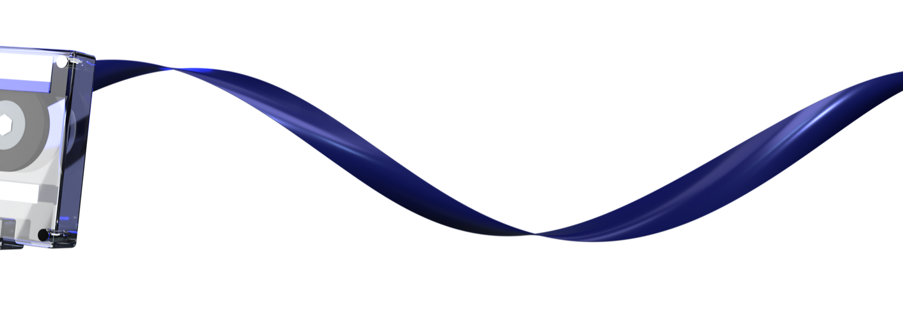
01 / 05
Твой год
47 382
минут музыки
02 / 05
Трек года
214×
«Висхолдинг» — Три дня дождя. Столько раз он звучал у тебя за год
03 / 05
Артист года
62 ч
с группой «Три дня дождя» — больше, чем с любым другим артистом
04 / 05
Неожиданный факт
1%
ты в 1% самых преданных слушателей группы «Три дня дождя»
05 / 05
Итог
Твой2026
47 382
минут
1 284
трека
347
артистов
86
жанров
214×
Висхолдинг
1%
Три дня дождя
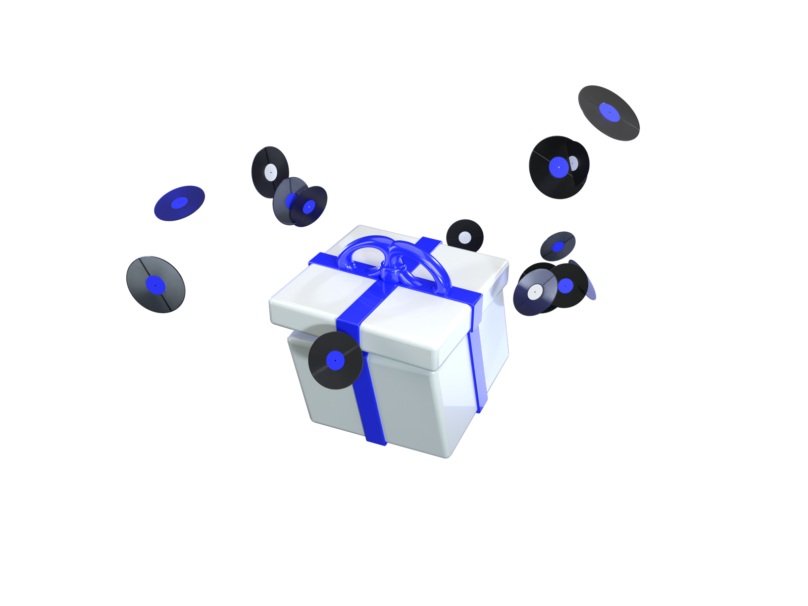
06
Делимся
Почему мыделимсяWrapped?
Музыкальные итоги становятся простым способом рассказать о себе другим. Любимый артист, главный трек года или попадание в 1% слушателей воспринимаются как что-то личное. А готовый визуальный формат позволяет сразу поделиться результатом в соцсетях.
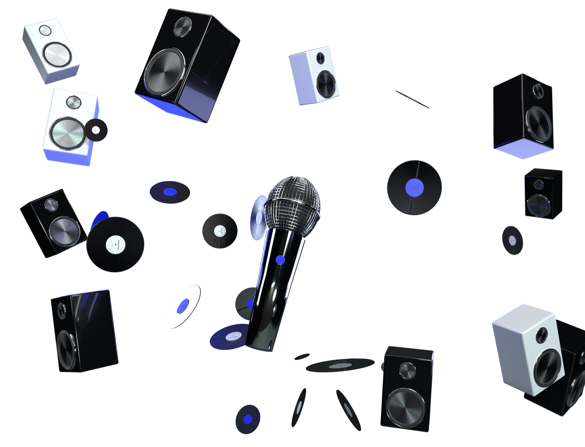
WRAPPED 2026
47 382
минут
×12
WRAPPED 2026
1%
топ слушателей
×156
×1
×2 048
WRAPPED 2026
214×
Висхолдинг
WRAPPED 2026
62 ч
Три дня дождя
WRAPPED 2026
2026
твой год
WRAPPED 2026
86
жанров
×2 048
WRAPPED 2026
1%
топ слушателей
07
Пределы данных
Алгоритмзнает не всё
Wrapped знает, что и сколько мы слушали, но не понимает, почему мы включали конкретную музыку. Случайный трек, музыка для учёбы или песня на повторе одинаково становятся частью статистики. Поэтому алгоритм показывает лишь одну версию нашего музыкального года.
ДАННЫЕ
≠
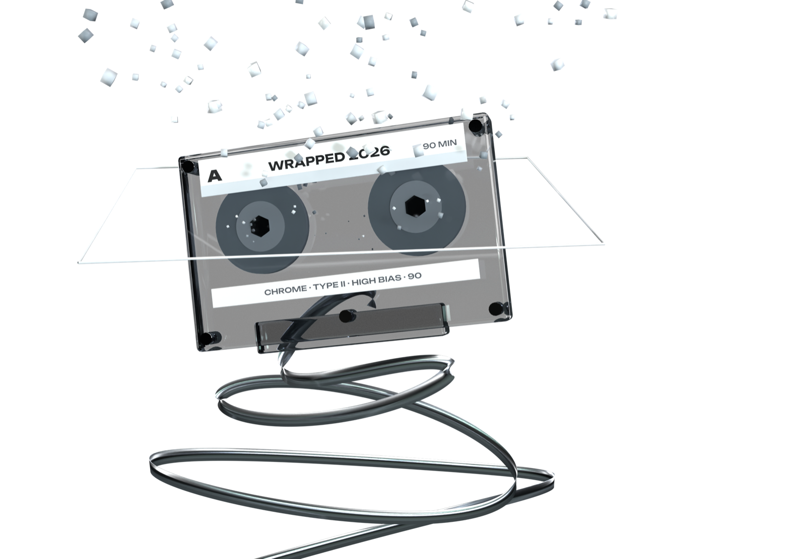
08
Финал
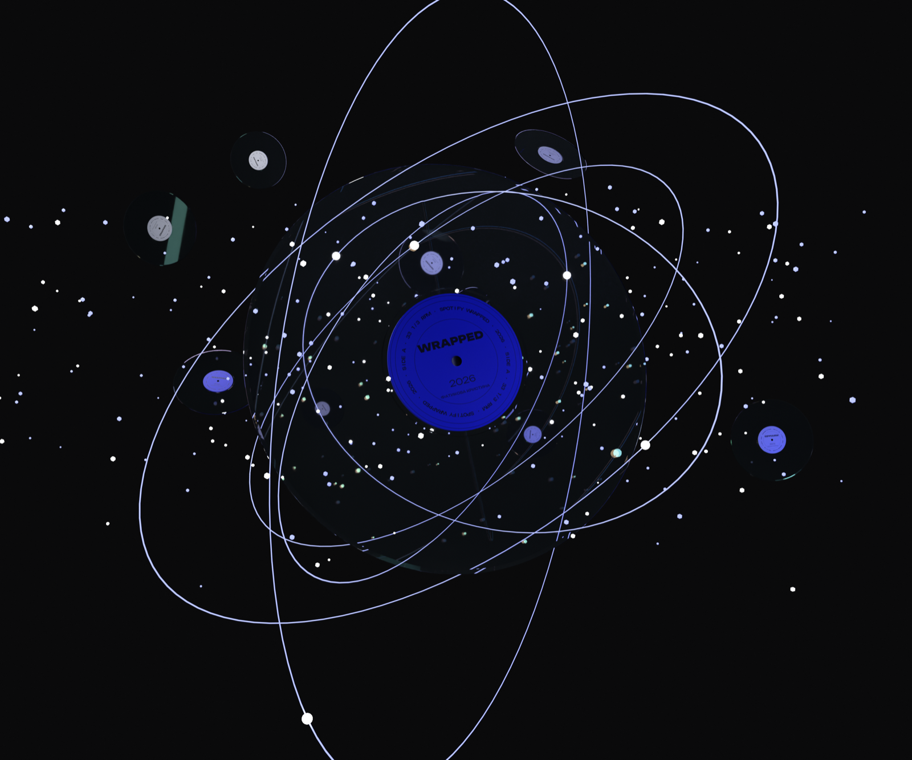
Твой личныйитог
За каждой песней могут оставаться люди, места, события и воспоминания, которых нет в статистике Spotify. Сервис способен посчитать минуты и определить любимый трек, но личный смысл музыке придаём мы сами. Поэтому Wrapped становится не просто итогом, а историей года.
АВТОР
ТЕМА
ГАРНИТУРЫ
3D
ДАННЫЕ
Фатикова Кристина
Spotify Wrapped:
как музыка превращается
в историю года
Unbounded — цифры и заголовки
Onest — текст
Blender / Cycles
музыкальные предметы — модели .glb
Демонстрационные.
События: Spotify Newsroom
ПАМЯТЬ